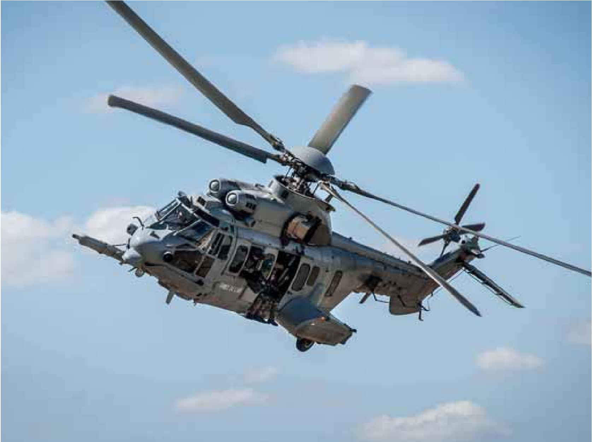

Landes
Un militaire meurt à l'entraînement
L’hélicoptère, un Caracal, avait décollé de la base aérienne de Cazaux en Gironde. PHOTO LAURENT JAHIER
Biscarosse - L'accident s'est déroulé au Centre d'essais de missiles. L'hélicoptère venait de la base aérienne de Cazaux. Le soldat décédé était un sauveteur plongeur des forces spéciales. Il avait 26 ans. Un autre militaire est grièvement blessé
Hier, mercredi 29 avril, vers 16 heures, un accident mortel a eu lieu à l'occasion d'un entraînement sur le site du Centre d'essais de lancement de missiles de Biscarrosse, dans les Landes. L'hélicoptère, un Caracal, avait décollé de la base aérienne (BA 120) de Cazaux, en Gironde.
Un militaire est décédé en chutant au sol lors de cet exercice d'hélitreuillage. Il s'agit d'un homme âgé de 26 ans, de l'escadron d'hélicoptères 1/67 Pyrénées, une unité volante des forces spéciales de l'armée de l'air stationnée sur la BA 120 de Cazaux. Depuis plus de dix ans, il intervient dans un très large panel de missions, sur le territoire national ou au combat dans le cadre du contre-terrorisme maritime.